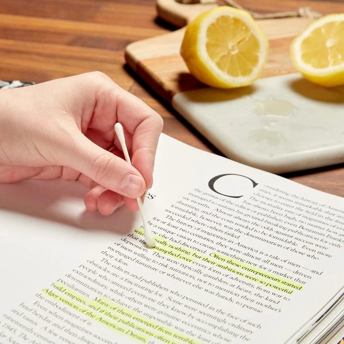
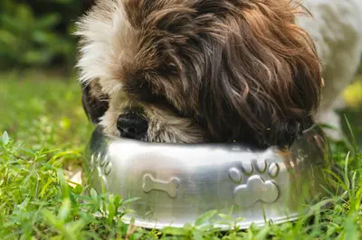
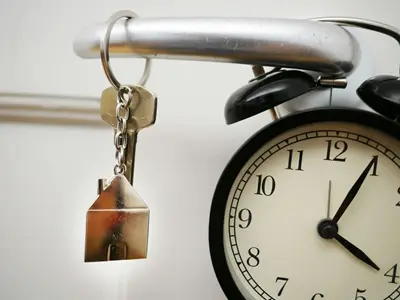
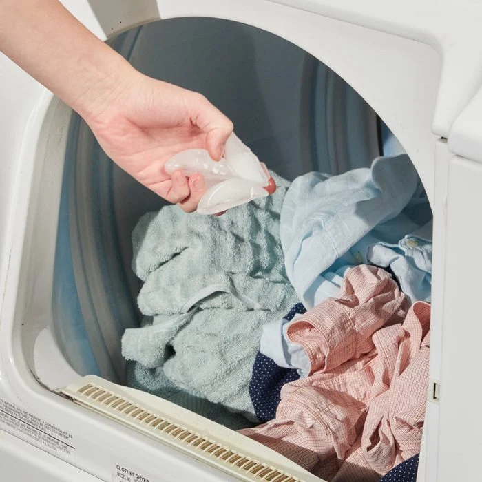

Always Remember!
In today's fast-paced world, the ability to maintain focus is crucial for achieving optimal efficiency. By directing our attention to the task at hand and minimizing distractions, we can enhance productivity and accomplish more in less time. When we prioritize focus, we cultivate a mindset that allows us to delve deeply into our work, leading to heightened creativity, problem-solving, and overall effectiveness. Whether tackling professional responsibilities or personal projects, honing the skill of focus empowers individuals to excel in their endeavors and make the most of every moment.
It's Time to Stop Spending All Day on Chores!
End highlighter headaches with lemon assistance!
Have you ever wanted to get highlighter marks out of a book? Lemon juice makes highlighter almost invisible by fading it sufficiently. Halve a lemon and squeeze some juice onto a cotton swab. Watch the color fade as you move the swab over the highlighted words. Using lemon juice from a jar also seemed to work. However, on the pieces we tested, it didn't work quite as well, and the harder it is to remove, the older the imprint.
Let Your Dog Eat Their Food, Not Your Time!
Rather than purchasing a slow-feed bowl, I bored holes and sealed the ends of a 12-inch piece of 2-inch PVC tubing. He needs to rotate the tube around for the puppy food to fall out of the holes once I load it with it. Without making a mess from eating too quickly, my puppy gets all the food he needs. Make sure the openings are big enough for the food to escape!
Label Your Keys to Unlock Time for What You Love!
I have an entire pocket full of keys from the home, vehicle, shed, and garage. I coat the key head on both sides with vibrant nail polish to help me discover my most used keys more quickly. For every key, I utilize a different hue. It'll amaze you how much longer the nail polish lasts than spray paint because it is so resilient.
Spend Less Time Ironing, Spend More Time Piloting!
To remove creases from a shirt or pair of pants, do away with the cumbersome iron and portable steamer. Put some ice cubes or a damp washcloth in the dryer along with your clothing that are rumpled. The creases will disappear when the ice melts and the water transforms into steam.